a gleaming sweat slathered on skin and screened across another,
through hair, through underwear and spattered over flesh and bedspread alike, her back slick wet, her back dripping, nitid, with a chest-flung perspiration that streams whilst thighs rub raw and stretch to the thrusting, the scratching, the bite, in sensations engulfed by eddies of hot breath and rage and spat on withdrawal, as come dribbles arsehole down, as two hips, thrashed aflame, recoil, her dark mop buried in sheets and cunt and anus gaping,
to nothing,
to gloom, to the silence stuffed cavern where softened reeks of shit choke quietude and blackness, where yellowed faecal streaks cross from cock to cotton, and where inhalation judders, as I roll to rags beside, clasping trousers, shoes, ideas, her vision pouring into mine, in a bloodshot, moistened intensity, unwavering before whimpers fall forth, before she asks and pleads and beseeches me to stay, her lip wobbling and body scrunched, knees to nipples and eyes probing to elicit a no,
as I think no,
thinking not now, not ever, not at day's end, nor whilst eyelids clench shut, their miseries flung forward in a clinging and clawing and cleaving to refusal, in a denial, in a slow and rehearsed meaninglessness that prevails because it must, because the weight of idiocy demands, because the blubbering confusion persists, and because I cannot brook the lies ahead, which declare that this is sufficient and aver that I am not the bastard bearer of sadness although I am a bastard, a bearer of sadness, for whom closure looms, so I leave, tiptoeing lightly down stairs,
to where tears fall and fixations congeal,
where bodies ache and a leaden carpet of possibility unfurls slowly unto dusk
<

 through hair, through underwear and spattered over flesh and bedspread alike, her back slick wet, her back dripping, nitid, with a chest-flung perspiration that streams whilst thighs rub raw and stretch to the thrusting, the scratching, the bite, in sensations engulfed by eddies of hot breath and rage and spat on withdrawal, as come dribbles arsehole down, as two hips, thrashed aflame, recoil, her dark mop buried in sheets and cunt and anus gaping,
through hair, through underwear and spattered over flesh and bedspread alike, her back slick wet, her back dripping, nitid, with a chest-flung perspiration that streams whilst thighs rub raw and stretch to the thrusting, the scratching, the bite, in sensations engulfed by eddies of hot breath and rage and spat on withdrawal, as come dribbles arsehole down, as two hips, thrashed aflame, recoil, her dark mop buried in sheets and cunt and anus gaping,  to nothing,
to nothing,  to gloom, to the silence stuffed cavern where softened reeks of shit choke quietude and blackness, where yellowed faecal streaks cross from cock to cotton, and where inhalation judders, as I roll to rags beside, clasping trousers, shoes, ideas, her vision pouring into mine, in a bloodshot, moistened intensity, unwavering before whimpers fall forth, before she asks and pleads and beseeches me to stay, her lip wobbling and body scrunched, knees to nipples and eyes probing to elicit a no,
to gloom, to the silence stuffed cavern where softened reeks of shit choke quietude and blackness, where yellowed faecal streaks cross from cock to cotton, and where inhalation judders, as I roll to rags beside, clasping trousers, shoes, ideas, her vision pouring into mine, in a bloodshot, moistened intensity, unwavering before whimpers fall forth, before she asks and pleads and beseeches me to stay, her lip wobbling and body scrunched, knees to nipples and eyes probing to elicit a no,  as I think no,
as I think no,  thinking not now, not ever, not at day's end, nor whilst eyelids clench shut, their miseries flung forward in a clinging and clawing and cleaving to refusal, in a denial, in a slow and rehearsed meaninglessness that prevails because it must, because the weight of idiocy demands, because the blubbering confusion persists, and because I cannot brook the lies ahead, which declare that this is sufficient and aver that I am not the bastard bearer of sadness although I am a bastard, a bearer of sadness, for whom closure looms, so I leave, tiptoeing lightly down stairs,
thinking not now, not ever, not at day's end, nor whilst eyelids clench shut, their miseries flung forward in a clinging and clawing and cleaving to refusal, in a denial, in a slow and rehearsed meaninglessness that prevails because it must, because the weight of idiocy demands, because the blubbering confusion persists, and because I cannot brook the lies ahead, which declare that this is sufficient and aver that I am not the bastard bearer of sadness although I am a bastard, a bearer of sadness, for whom closure looms, so I leave, tiptoeing lightly down stairs,  to where tears fall and fixations congeal,
to where tears fall and fixations congeal,  where bodies ache and a leaden carpet of possibility unfurls slowly unto dusk
where bodies ache and a leaden carpet of possibility unfurls slowly unto dusk